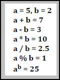

Zadanie 5
Zdefiniuj zmienne przechowujące dwie liczby całkowite. Wyznacz wyniki działań arytmetycznych wykonanych na tych liczbach: dodawania (+), odejmowania (-), mnożenia (*), dzielenia (/), operacji modulo, czyli znajdowania reszty z dzielenia (%) oraz potęgowania (**). Wyniki wyprowadź na ekran jak na zrzucie.
Więcej o operatorach arytmetycznych w JavaScript 